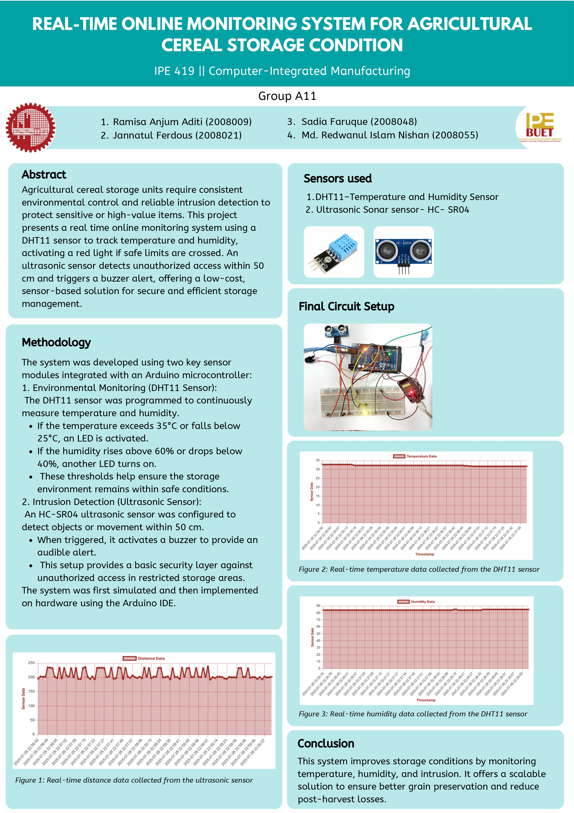

Storage units often lack real-time environmental monitoring and intrusion detection, putting sensitive or valuable items at risk. There is a need for a low-cost, sensor-based solution that ensures safe storage conditions and alerts in case of unauthorized access.
The system was built using two key sensor modules integrated with an Arduino microcontroller:
The entire system was first simulated and then implemented on hardware using the Arduino IDE.

#include <DHT.h>
#define DHTPIN 2
#define DHTTYPE DHT11
#define TRIG_PIN 3
#define ECHO_PIN 4
#define BUZZER_DHT 5
#define BUZZER_DIST 6
#define TEMP_LIGHT 7
#define HUM_LIGHT 8
DHT dht(DHTPIN, DHTTYPE);
void setup() {
Serial.begin(9600); // For debug via USB
Serial2.begin(9600); // Communication with ESP32
dht.begin();
pinMode(TRIG_PIN, OUTPUT);
pinMode(ECHO_PIN, INPUT);
pinMode(BUZZER_DHT, OUTPUT);
pinMode(BUZZER_DIST, OUTPUT);
pinMode(TEMP_LIGHT, OUTPUT);
pinMode(HUM_LIGHT, OUTPUT);
}
void loop() {
float temp = dht.readTemperature();
float hum = dht.readHumidity();
if (isnan(temp) || isnan(hum)) {
Serial.println("❌ Failed to read from DHT");
return;
}
// HC-SR04 distance measurement
digitalWrite(TRIG_PIN, LOW);
delayMicroseconds(2);
digitalWrite(TRIG_PIN, HIGH);
delayMicroseconds(10);
digitalWrite(TRIG_PIN, LOW);
long duration = pulseIn(ECHO_PIN, HIGH); // timeout 30ms
float distance = duration * 0.034 / 2.0 ;
// Logic: DHT buzzer ON if temp or hum out of range
if (temp > 35 || temp < 25 || hum < 40 || hum > 60) {
digitalWrite(BUZZER_DHT, HIGH);
} else {
digitalWrite(BUZZER_DHT, LOW);
}
// NEW: Separate lights for temperature and humidity status
digitalWrite(TEMP_LIGHT, (temp > 35 || temp < 25) ? HIGH : LOW);
digitalWrite(HUM_LIGHT, (hum < 40 || hum > 60) ? HIGH : LOW);
// Logic: Distance buzzer ON if object within 50 cm
if (distance > 0 && distance <= 50) {
digitalWrite(BUZZER_DIST, HIGH);
} else {
digitalWrite(BUZZER_DIST, LOW);
}
// Send data to ESP32 and Serial Monitor
String payload = String(temp) + "," + String(hum) + "," + String(distance, 2);
Serial2.println(payload);
Serial.println(payload);
delay(1000);
}